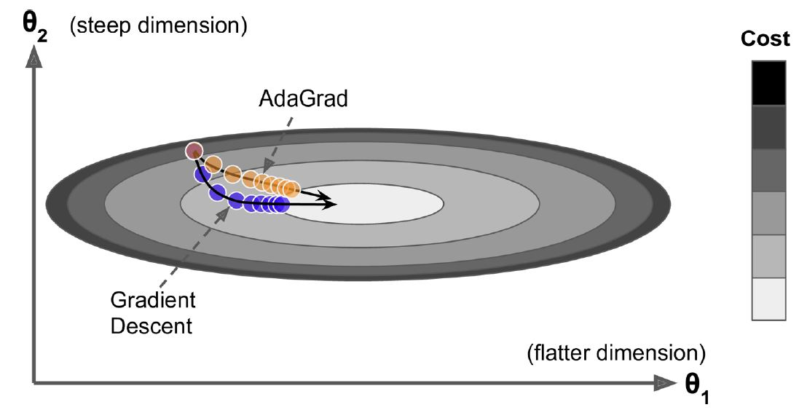

Optimizadores¶
Keras tiene varios algoritmos para optimizar el entrenamiento de la red neuronal artificial aquí.
optimizer =: por defecto usa "rmsprop". Los demás algoritmos
son: "sgd", "rmsprop", "adam", "adadelta",
"adagrad", "adamax", "nadam", "ftrl". Cada algoritmo
tiene unos hiperparámetros por defecto.
Esto métodos se aplican al Gradiente Descendente y tienen diferentes maneras de optimizar los parámetros de la red neuronal.
Hasta ahora se ha optimizado la red con el método del Gradiente Descedente Estocástico. En Keras tiene por defecto los siguientes hiperparámetros:
keras.optimizers.SGD(learning_rate=0.01, momentum=0.0, nesterov=False)
El hiperparámetro momentum tiene un valor por defecto de 0.0. Si
cambiamos este valor, este algoritmo de Gradiente Descedente
convencional tiene una variación y es la siguiente.
Momentum:¶
Momentum¶
El método del Descenso del Gradiente estándar realiza pasos pequeños y regulares por la pendiente de la función de costo, por lo que el algoritmo tarda en llegar al fondo de la función, en cambio, Momentum realiza una aceleración para llegar al fondo de la función más rápido, es decir, comienza lentamente, pero rápidamente toma impulso hasta que finalmente alcanza cierta velocidad.
El método del Descenso del Gradiente tradicional no considera los gradientes anteriores, si el gradiente local es pequeño, va muy lentamente, en cambio, Momentum sí tiene en cuenta los gradientes anteriores en cada iteración, en otras palabras, el gradiente se usa para la aceleración, no para la velocidad.
El algoritmo introduce un nuevo hiperparámetro \(\beta\) llamado momentum, que por defecto se establece en 0 indicando alta fricción (como la fricción de una superficie) y 1 para sin fricción, un valor de momentum de 0,9 es bueno.
En cada iteración los pesos son actualizados y la velocidad de este cambio es igual al gradiente multiplicado por la tasa de aprendizaje \(\eta\) multiplicada por \(\frac{1}{1-\beta}\). Si \(\beta=0\), la velocidad es multiplicada por \(1\) y no acelera, pero si \(\beta=0.9\), la velocidad se \(10\) veces mayor, es decir, Momentum resulta siendo 10 veces más rápido que el Descenso del Gradiente convencional.
Este impulso en el Descenso del Gradiente permite que Momentum escape de las mesetas mucho más rápido que el Descenso del Gradiente.
Cuando las entradas a la red neuronal tienen escalas diferentes, la función de costo tendrá la forma de un tazón alargado. En esta forma el Descenso del Gradiente descenderá rápido por la pendiente empinada, pero luego se volverá lento al descender por el valle. Por el contrario, Momentum rodará por el valle cada vez más rápido hasta llegar al fondo que el óptimo.
Las capas superiores de las redes neuronales profundan a menudo terminan teniendo entradas con escalas diferentes, por lo que usar Optimización Momentum ayuda mucho.
Este optimizador también ayuda a superar los óptimos locales.
El único inconveniente de la Momentum es que agrega otro hiperparámetro para ajustar. Sin embargo, el valor de momentum de \(0,9\) suele funcionar bien en la práctica y casi siempre va más rápido que el descenso de gradiente normal.
optimizer = keras.optimizers.SGD(lr=0.01, momentum=0.9)
Gradiente acelerado de Nesterov - NAG (Nesterov Accelerated Gradient):¶
Si al método de SGD cambiamos el argumento nesterov=False por
nesterov=True el algoritmo de optimización cambia y se denomina NAG.
También llamado Optimización de Momentum de Nesterov, es una pequeña variación a la Optimización Momentun. Mide el gradiente de la función de costo no en la posición local sino ligeramente hacia adelante en la dirección del impulso.
Este pequeño ajuste funciona porque, en general, el vector de impulso apuntará en la dirección correcta (es decir, hacia el punto óptimo), por lo que será un poco más preciso usar el gradiente medido un poco más lejos en esa dirección en lugar del gradiente en la posición original.
Después de un tiempo, estas pequeñas mejoras se suman y NAG termina siendo significativamente más rápido que la Optimización Momentum normal. Esto ayuda a reducir las oscilaciones y, por lo tanto, NAG converge más rápido.
optimizer = keras.optimizers.SGD(lr=0.01, momentum=0.9, nesterov=True)
AdaGrad:¶
Este algoritmo tiene un decaimiento en la tasa de aprendizaje, pero lo hace más rápido para dimensiones empinadas que para dimensiones con pendientes más suaves. Esto se llama tasa de aprendizaje adaptativa (Adaptive learning rate). Ayuda a apuntar las actualizaciones resultantes más directamente hacia el óptimo global. Un beneficio adicional es que requiere mucho menos ajuste que el hiperparámetro tasa de aprendizaje.

AdaGrad¶
AdaGrad suele funcionar bien para problemas simples, pero a menudo se detiene demasiado pronto cuando se entrenan redes neuronales. La tasa de aprendizaje se reduce tanto que el algoritmo termina deteniéndose por completo antes de alcanzar el óptimo global. Entonces, aunque Keras tiene un optimizador Adagrad, no debe usarlo para entrenar redes neuronales profundas (aunque puede ser eficiente para tareas más simples como la regresión lineal). Aun así, comprender AdaGrad es útil para comprender los otros optimizadores de tasa de aprendizaje adaptativo.
keras.optimizers.Adagrad(learning_rate=0.001, epsilon=1e-07)
RMSProp:¶
Como hemos visto, AdaGrad corre el riesgo de ralentizarse demasiado rápido y nunca converger al óptimo global. El algoritmo RMSProp corrige esto al acumular solo los gradientes de las iteraciones más recientes (a diferencia de todos los gradientes desde el comienzo del entrenamiento). Lo hace usando decaimiento exponencial en el primer paso.
La tasa de decaimiento \(\rho\) normalmente se establece en \(0,9\), es el valor por defecto. Sí, una vez más es un nuevo hiperparámetro, pero este valor predeterminado a menudo funciona bien, por lo que es posible que no necesite ajustarlo en absoluto. Como era de esperar, Keras tiene un optimizador RMSprop:
Este es el optimizador por defecto en Keras.
keras.optimizers.RMSprop(learning_rate=0.001, rho=0.9, momentum=0.0, epsilon=1e-07)
Excepto en problemas muy simples, este optimizador casi siempre funciona mucho mejor que AdaGrad. De hecho, fue el algoritmo de optimización preferido de muchos investigadores hasta que surgió la optimización de Adam.
Adam:¶
Adam significa estimación de momento adaptativo (Adaptive Moment estimation), combina las ideas de Optimización Momentum y RMSProp: al igual que la Optimización Momentum, realiza un seguimiento de un promedio exponencialmente decreciente de gradientes pasados; y al igual que RMSProp, realiza un seguimiento de un promedio exponencialmente decreciente de gradientes cuadrados anteriores.
Dado que Adam es un algoritmo de tasa de aprendizaje adaptativo (como AdaGrad y RMSProp), requiere menos ajustes del hiperparámetro tasa de aprendizaje. A menudo puede usar el valor predeterminado \(\eta = 0.001\), lo que hace que Adam sea aún más fácil de usar que Descenso del Gradiente convencional.
keras.optimizers.Adam(learning_rate=0.001, beta_1=0.9, beta_2=0.999, epsilon=1e-07)
AdaMax:¶
Este es una variación de Adam, AdaMax podría ser más estable que Adam, pero esto depende del conjunto de datos y, en general, Adam funciona mejor. Entonces, este es solo un optimizador más que puede probar si tiene problemas con Adam en alguna tarea.
keras.optimizers.Adamax(learning_rate=0.001, beta_1=0.9, beta_2=0.999, epsilon=1e-07
Nadam:¶
La optimización de Nadam es la optimización de Adam más el truco de Nesterov, por lo que a menudo convergerá un poco más rápido que Adam. En su informe que presenta esta técnica, el investigador Timothy Dozat compara muchos optimizadores diferentes en varias tareas y encuentra que Nadam generalmente supera a Adam, pero a veces es superado por RMSProp.
keras.optimizers.Nadam(learning_rate=0.001, beta_1=0.9, beta_2=0.999, epsilon=1e-07)
Los métodos de optimización adaptativa (incluida la optimización de RMSProp, Adam y Nadam) suelen ser excelentes y convergen rápidamente en una buena solución. Cuando esté decepcionado por el rendimiento de su modelo, intente usar Nesterov.